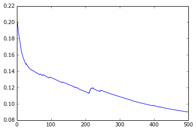
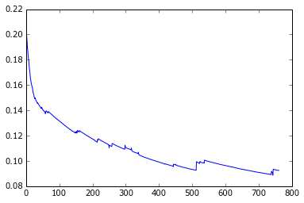
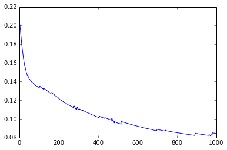
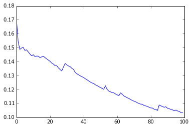
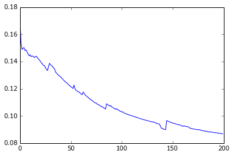
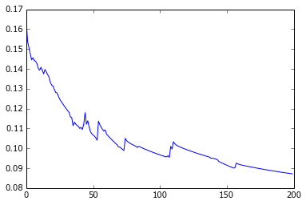
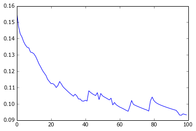
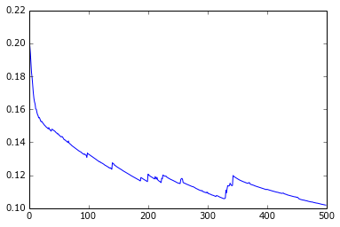

Session recording of a couple tests to check training time and convergence for a dataset such as bigrednight. Set-up: Multi-layer perceptron with one hidden layer of 50 units. Input layer with all the pixels from 5 pictures. [Stochastic] gradient descent with fixed learning rate. Data = bigrednight: 345 color pictures of 40x40 pixels, each having an associated time stamp. This gives 24005 features
Results: - Even though the pictures are fairly small, the training time has increased significantly compared to rednight dataset. => Using other optimisation methods should be investigated => Reducing dimensionality should be investigated - With a learning rate of 50, an OK-quick convergence is achieved though the descent is not nice and smooth. - Lower is of course slower, higher makes the descent unstable, especially when approaching the minimum - Stochastic descent improves the speed but at the price of an unstable descent => Reducing the learning rate over iterations should be investigated
In [1]: runfile('/home/romain/prog/photoweather/bigrednight.py', wdir='/home/romain/prog/photoweather')
In [2]: X, y = make_dataset('artificial/bigrednight/')
In [3]: nn = Network(4800, learn_rate = 50)
In [4]: costs, e = nn.train(X, y, min_loss_diff=.999)
Starting a training run...
Total training time: 736.476s in 500 epochs, cost: 0.099912
In [5]: %matplotlib inline
In [6]: plt.plot(costs)
Out[6]: [<matplotlib.lines.Line2D at 0x7f736f9ac310>]
In [7]: nn = Network(4800, learn_rate = 100)
In [8]: costs, e = nn.train(X, y, min_loss_diff=.999)
Starting a training run...
Total training time: 667.717s in 500 epochs, cost: 0.090066
In [9]: plt.plot(costs)
Out[9]: [<matplotlib.lines.Line2D at 0x7f7371b20d50>]

In [10]: costs2, e = nn.train(X, y, min_loss_diff=.999)
Starting a training run...
Total training time: 2.507s in 2 epochs, cost: 0.089927
In [11]: nn = Network(4800, learn_rate = 100)
In [12]: costs, e = nn.train(X, y, min_loss_diff=.999, max_epoch=1000)
Starting a training run...
Total training time: 959.975s in 762 epochs, cost: 0.092488
In [13]: plt.plot(costs)
Out[13]: [<matplotlib.lines.Line2D at 0x7f736f92d8d0>]

In [14]: nn = Network(4800, learn_rate = 50)
In [15]: costs, e = nn.train(X, y, min_loss_diff=.999, max_epoch=1000)
Starting a training run...
Total training time: 1264.086s in 1000 epochs, cost: 0.084370
In [16]: plt.plot(costs)
Out[16]: [<matplotlib.lines.Line2D at 0x7f7374633a90>]

In [17]: nn = Network(4800, learn_rate = 50)
In [18]: costs, e = nn.train(X, y, batch_size=20, min_loss_diff=.999, max_epoch=100)
Starting a training run...
Total training time: 342.895s in 100 epochs, cost: 0.103454
In [19]: plt.plot(costs)
Out[19]: [<matplotlib.lines.Line2D at 0x7f736f8e0990>]

In [20]: costs2, e = nn.train(X, y, batch_size=20, min_loss_diff=.999, max_epoch=100)
Starting a training run...
Total training time: 322.469s in 100 epochs, cost: 0.086839
In [21]: plt.plot(costs+costs2)
Out[21]: [<matplotlib.lines.Line2D at 0x7f737445e250>]

In [22]: nn = Network(4800, learn_rate = 100)
In [23]: costs, e = nn.train(X, y, batch_size=20, min_loss_diff=.999, max_epoch=200)
Starting a training run...
Total training time: 656.875s in 200 epochs, cost: 0.087126
In [24]: plt.plot(costs)
Out[24]: [<matplotlib.lines.Line2D at 0x7f7374533f10>]

In [25]: nn = Network(4800, learn_rate = 50)
In [26]: costs, e = nn.train(X, y, batch_size=10, min_loss_diff=.999, max_epoch=100)
Starting a training run...
Total training time: 441.720s in 100 epochs, cost: 0.093259
In [27]: plt.plot(costs)
Out[27]: [<matplotlib.lines.Line2D at 0x7f736f6f4510>]

In [28]: nn = Network(4800, learn_rate=200)
In [29]: X, y = make_dataset('data')
In [30]: costs, e = nn.train(X, y, min_loss_diff=.999, max_epoch=500)
Starting a training run...
Total training time: 702.434s in 500 epochs, cost: 0.101880
In [31]: plt.plot(costs)
Out[31]: [<matplotlib.lines.Line2D at 0x7f89830966d0>]
